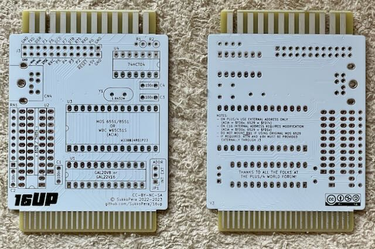
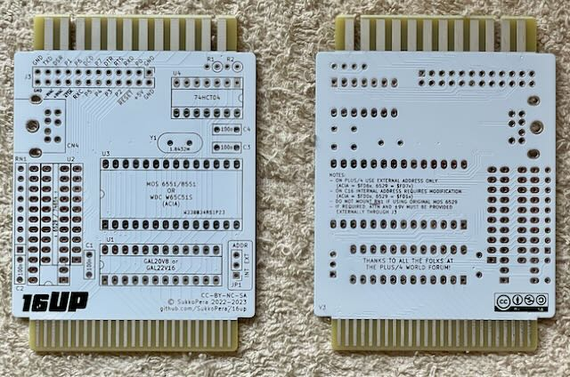
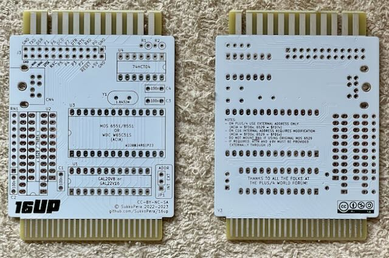

Dieses Modul gibt dem C16 einen Userport, oder dem Plus/4 einen zweiten.
Die Platine stammt von SukkoPera. Ich habe sie aufgebaut aber noch nicht getestet.
Projekt-Homepage • Interakiver Bestückungsplan

| Komponente | Anzahl | Preis | Anbieter |
| Platine | 1 | €1.00 | |
| 100nF Kondensator | 4 | €0.12 | Reichelt • Reichelt |
| 10kΩ Widerstand | 2 | €0.08 | Reichelt |
| 9-8 8.2kΩ Widerstandnetzwerk | 1 | €0.09 | Reichelt |
| 1.8432MHz Quarz | 1 | €0.91 | Mouser • Reichelt |
| 90° Mini-DIN-8 Buchse | 1 | €0.30 | Reichelt |
| 74HCT04 | 1 | €0.58 | Reichelt |
| 74LS654 | 1 | €8.40 | eBay |
| GAL20V8 | 1 | €1.70 | eBay |
| W65C51S | 1 | — | |
| 14-Pin Sockel, schmal | 1 | €0.21 | Reichelt |
| 24-Pin Sockel, schmal | 2 | €0.86 | Reichelt |
| 28-Pin Sockel, breit | 1 | €0.49 | Reichelt |
| 1x3 Stiftleiste | 1 | €0.05 | Reichelt |
| Jumper | 1 | €0.03 | Reichelt |
| nur Platine | €1.00 | ||
| Teilbausatz | €14.82 |